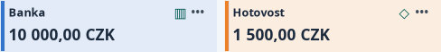
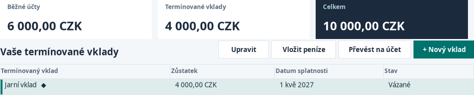
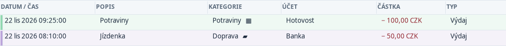
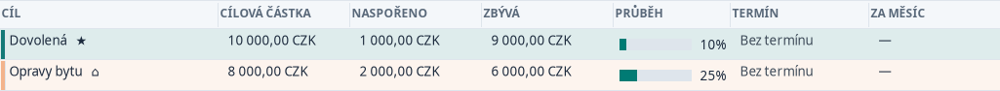

První spuštění a aktualizace
Otevření správného rozpočtu
Před aktualizací otevřete starší verzi a zvolte Nastavení a zálohy → Vyexportovat zálohu. Soubor JSON uschovejte, zavřete aplikaci a celý nový ZIP rozbalte do nové složky. Ve složce BudgetDesk spusťte BudgetDesk.exe. Konfigurační soubor ponechte vedle něj. Aplikace načte dosavadní rozpočet ze stejného místa. U starších položek, u kterých byl uložen pouze den, zůstane čas prázdný, dokud ho sami nedoplníte.
Šest hlavních karet se jmenuje Účty a platby, Termínované vklady, Denní transakce, Měsíční přehled, Roční přehled a Cíle spoření. Pro vlastní zkoušku spusťte Support/Test-Sandbox.cmd. Otevřete tím samostatný, zpočátku prázdný rozpočet, který se uchová i po zavření. Support/Try-Demo.cmd otevře oddělená ukázková data.
Který soubor spustit
| Soubor | Co se otevře |
|---|---|
| BudgetDesk.exe | Váš běžný rozpočet. Po rozbalení nové verze do jiné složky se načtou data z dosavadního umístění. |
| Support/Test-Sandbox.cmd | Samostatný rozpočet pro zkoušení. Zkušební transakce v něm zůstanou i po zavření. |
| Support/Try-Demo.cmd | Oddělený rozpočet s ukázkovými částkami pro seznámení se všemi šesti kartami. |
Jazyk a vzhled
Přizpůsobení prostředí
Otevřete Settings & backup. V poli Language / Jazyk vyberte English, Ελληνικά nebo Čeština. V poli Appearance / Vzhled vyberte Světlý nebo Tmavý a potvrďte tlačítkem Uložit. Změna se projeví ihned. Volby se uloží s tímto rozpočtem a jsou součástí jeho zálohy JSON.
Pro návrat k angličtině otevřete Nastavení a zálohy a v prvním poli zvolte English. Vlastní názvy účtů, příjemci, popisy a částky zůstávají zachovány. Pozastavená pravidelná platba má v obou režimech červenou kartu.
Co se projeví po uložení
| Nastavení | Výsledek |
|---|---|
| Jazyk | Hned se změní nabídky, tlačítka, popisy stavů i názvy barev. Vlastní názvy účtů a texty transakcí si zachovají původní znění. |
| Světlý nebo tmavý vzhled | Přepnou se všechny karty. Barvy jednotlivých položek se přizpůsobí podkladu. |
| Samostatné rozpočty | Ve zkušebním rozpočtu si můžete nastavit jiný vzhled a snadno ho odlišit od běžného okna. |
Barva jednotlivých položek
Výběr při vytváření nebo úpravě
Otevřete nový či existující účet, pravidelnou platbu, transakci, plánovaný výdaj, cíl spoření nebo šablonu. V řádku Barva položky stiskněte tlačítko s aktuální barvou.
Vyberte jeden z 32 odstínů. Jeho název zobrazíte najetím myší nebo přechodem pomocí šipek. Zatržítko označuje nynější volbu. Po výběru se paleta zavře. Volbu potvrďte tlačítkem Uložit ve formuláři položky.
Kde se vybraná barva projeví
| Položka | Výsledek |
|---|---|
| Účet nebo pravidelná platba | Na kartičce se zobrazí tónované pozadí a proužek v přesném odstínu. Pozastavená platba zčervená. Po obnovení se vrátí její vlastní barva. |
| Transakce nebo plánovaný výdaj | Obarví se příslušný řádek. Zaúčtovaný výdaj přebírá barvu plánu. Nová barva pravidelné platby se vztahuje na další úhrady. |
| Cíl nebo šablona | Každý cíl má vlastní barvu řádku. Šablona nabídne svou barvu v novém konceptu, kde ji můžete upravit. |
Všech 32 dostupných barev
- Vínová
- Červená
- Korálová
- Růžová
- Purpurová
- Švestková
- Fialová
- Levandulová
- Hnědá
- Rezavá
- Oranžová
- Broskvová
- Jantarová
- Žlutá
- Olivová
- Limetková
- Lesní zelená
- Zelená
- Mátová
- Petrolejová
- Tyrkysová
- Azurová
- Nebesky modrá
- Modrá
- Tmavě modrá
- Indigová
- Písková
- Bílá
- Stříbrná
- Šedá
- Břidlicová
- Černá
Účty a kategorie
Uspořádání účtů
V Účty a platby → + Přidat účet zadejte název, ikonu, měnu a počáteční zůstatek. Použijte stav na začátku zvoleného dne před započtením jeho transakcí. Počáteční zůstatek vstupuje do stavu účtu. V přehledu příjmů se objeví až zaúčtované příjmy. Kliknutím na kartu účet upravíte. Pořadí karet změníte přetažením nebo číselnou hodnotou Pořadí zobrazení.
V Denní transakce → Kategorie lze přidat či přejmenovat kategorii a nastavit měsíční rozpočet. Nula ponechá kategorii bez limitu. Rozpočet může obsahovat až 20 účtů, 20 kategorií a 20 pravidelných plateb. V nabídkách účtů, kategorií a ikon jsou názvy seřazené abecedně a symbol je až za názvem. Stiskněte písmeno v aktivní nabídce a výběr přeskočí na první odpovídající název.
První kliknutí na záhlaví sloupce seřadí položky vzestupně, druhé sestupně a třetí obnoví výchozí pořadí. Datum se řadí podle času a částka podle hodnoty. Řazení zahrne všechny stránky. Mezi nimi přecházejte pomocí Předchozí / Další.

Jak pracovat s počátečním zůstatkem
| Příklad | Dopad na účet a přehledy |
|---|---|
| 10 000 CZK na začátku dne | Účet má zůstatek 10 000 CZK. Dnešní zaúčtovaný příjem je nula. |
| Dnešní nákup za 300 CZK | Zůstatek klesne na 9 700 CZK. U vybrané kategorie se zobrazí výdaj 300 CZK. |
| Dnešní výplata 2 000 CZK | Zůstatek vzroste na 11 700 CZK. Přehled příjmů ukáže 2 000 CZK. |
Termínované vklady
Založení a financování vkladu
Otevřete Termínované vklady → + Nový vklad. Zadejte název, datum založení a datum splatnosti. Vyberte zdrojový účet a částku vkladu. Pokud už peníze leží na vkladu a nejsou v zůstatcích běžných účtů, zvolte Zůstatek stávajícího vkladu. Počáteční částka se přičte k celkovým prostředkům.
Přes Vložit peníze přidáte další částku. Přes Převést na účet vrátíte část zůstatku nebo celý vklad. Při převodu mezi měnami ověřte skutečně odepsanou a připsanou částku. V historii se převod objeví jednou.

Příklad s počátečním zůstatkem 10 000 CZK
| Pohyb | Běžný účet · vklad · celkem |
|---|---|
| Převod 4 000 CZK na nový vklad | 6 000 · 4 000 · 10 000 CZK |
| Převod 1 500 CZK zpět na účet | 7 500 · 2 500 · 10 000 CZK |
| Převod zbývajících 2 500 CZK zpět | 10 000 · 0 · 10 000 CZK |
Každodenní transakce
Od účtenky k záznamu
V Denní transakce → + Výdaj vyberte místní datum a čas, obchodníka nebo popis, účet, částku a kategorii. Klikněte na Uložit. Pomocí + Příjem připíšete příjem. U Převod vyberte zdrojový i cílový účet. Pokud mají různé měny, zadejte také částku skutečně připsanou v cílové měně. Převod přesune peníze mezi účty a nezapočítá se do příjmů ani výdajů.
Obsahuje-li účtenka více kategorií, zadejte celou cenu, otevřete Rozdělení nákupu, rozepište částky a potvrďte Použít rozdělení. Jejich součet musí odpovídat ceně na účtence v původní měně. Z účtu se odečte jediná platba. Upravit výběr opraví vybranou transakci. Smazat ji odstraní a zůstatky se přepočítají.

Jeden nákup ve dvou kategoriích
| Postup | Co zkontrolovat |
|---|---|
| Začněte s 1 500 CZK v hotovosti | Založte výdaj na celou účtenku, tedy na 1 000 CZK. Jako platící účet zvolte Hotovost. |
| Rozdělte 600 a 400 CZK | V rozdělení nákupu vyberte dvě kategorie. Před uložením musí být součet 1 000 CZK. |
| Otevřete zaúčtované záznamy | V hotovosti zbývá 500 CZK a je zaúčtován jeden výdaj. V měsíčním přehledu uvidíte u kategorií 600 a 400 CZK. |
Platba v jiné měně
Kontrola účtenky a částky na účtu
V + Výdaj vyberte korunový účet. U pole Částka / měna se nejdříve zobrazí CZK. Jestliže je účtenka na 20 eur, zadejte 20 a vedle vyberte EUR. Při kurzu 25 Kč za euro zadejte v části Přepočet hodnotu 25. Náhled ukáže zatížení účtu 500 CZK. Po uložení klesne zůstatek z 10 000 na 9 500 Kč a na transakci zůstane částka 20 EUR.
Kurz udává počet jednotek měny účtu za jednu jednotku měny nákupu. Můžete upravit navržený kurz podle výpisu z banky. Pokud kurz chybí, doplňte jej před uložením. V Nastavení a zálohy se zadávají kurzy vůči CZK pro EUR, USD, GBP, CHF a PLN. Měna přehledu určuje, v čem se zobrazují souhrny. Zůstatky se oceňují aktuálním kurzem. Zaúčtovaná částka a její původní korunová hodnota se po změně kurzu zachovají. Měnu lze stejně vybrat u příjmů, plánů i pravidelných plateb.
Ocenění účtu a historická hodnota nákupu
| Kdy | Co se zapíše |
|---|---|
| Účet se 100 EUR při kurzu 25 CZK/EUR | Do celkového zůstatku se připočte 2 500 CZK. |
| Výdaj 10 EUR při stejném kurzu | Na účtu zbývá 90 EUR. V přehledu v korunách představuje výdaj 250 CZK. |
| Pozdější změna kurzu na 26 | Současných 90 EUR odpovídá 2 340 CZK. Starší výdaj v přehledu nadále činí 250 CZK. |
Jednorázový plánovaný výdaj
Zaúčtování ve zvolený čas
Otevřete Denní transakce → + Budoucí výdaj. Zadejte částku, měnu, účet, kategorii a místní datum a čas splatnosti. Nový plán má zapnutou volbu Zapsat automaticky v termínu. Do zaúčtování ho najdete v části Budoucí / plány s označením Auto nebo Ručně.
Po probuzení počítače nebo otevření rozpočtu aplikace doplní zmeškané platby. Jedná se o záznam do rozpočtu. Případný skutečný bankovní převod provedete zvlášť.
Pro pouhou připomínku automatický zápis vypněte. Plány vytvořené před verzí 1.2 zůstávají ruční. Chcete-li takový plán automatizovat, otevřete ho, zvolte čas splatnosti, zapněte automatický zápis a uložte. Je-li již po termínu, výdaj se zaúčtuje ihned.
U ruční připomínky se po uplynutí času změní „Splatné dnes“ na „Dnes po termínu“. Připomínka bez času je splatná celý den. Po zaplacení zvolte Zapsat úhradu. Potvrzením se použije aktuální čas nebo čas, který zadáte. CSV plánů obsahuje všechny čekající plány včetně jejich stavu.
Ve 21:14 naplánujte 900 CZK na 21:15
| Čas | Co uvidíte |
|---|---|
| 21:14 | Položka za 900 CZK je mezi plány. Disponibilní zůstatek i skutečné měsíční výdaje jsou dosud stejné. |
| 21:15 se zapnutým automatickým zápisem | Plán zmizí ze seznamu, vznikne jeden výdaj 900 CZK a účet se jednou sníží. |
| 21:16 při opětovném otevření | Automatický výdaj má čas 21:15. Dalším spuštěním se stejná částka nepřipíše podruhé k výdajům. |
Pravidelné platby
Nastavení další neuhrazené splátky
V Účty a platby → + Pravidelná platba zadejte účet, kategorii, částku, datum a čas příští nezaplacené splátky a interval. Pro čtvrtletní platbu nastavte 3 Měsíce. Má-li měsíční platba termín 31. dne, v kratším měsíci připadne na jeho poslední den. Jakmile to kalendář dovolí, vrátí se na 31.
Přepínač Stav určuje, zda je plán aktivní. Aktivní Ručně čeká na Zapsat platbu. Po potvrzení se zaúčtuje jedna úhrada s aktuálním časem a posune se další termín. S volbou Automatický zápis se zobrazí Auto. Aplikace zkontroluje splatné platby při otevření rozpočtu a nastaví další kontrolu na čas nejbližší platby. Po delší přestávce doplní zmeškané splátky s jejich plánovanými časy. Opětovné spuštění stejnou splátku nezdvojí.
Pozastavit / obnovit plán pozastaví nebo obnoví. Karta pozastavené platby zčervená. Má bílý text a tučné označení Pozastaveno. Červená zůstane i po výběru jiné platby nebo opětovném otevření rozpočtu. Po obnovení se vrátí původní barvy. Při obnovení automatického plánu po splatnosti aplikace požádá o potvrzení doplnění plateb. Chcete-li některé vynechat, před obnovením upravte příští nezaplacený termín. Změny částky se použijí na další splátky. Po najetí myší na kartu uvidíte celé údaje včetně termínu a režimu.
Co říká stav na kartičce
| Stav | Kdy se posune další termín |
|---|---|
| Automaticky | Aktivní plán zaúčtuje každou splatnou platbu. Termíny zmeškané během zavření aplikace se zpracují po návratu. |
| Ručně | Po zaplacení zvolte Zapsat platbu. Potvrzením vznikne jeden výdaj a plán se posune o jedno období. |
| Pozastaveno | Kartička je červená a automatický zápis je pozastaven. Před obnovením zkontrolujte nejbližší nezaplacený termín. |
Šablony a obchodníci
Příprava opakovaných údajů
V Denní transakce → Šablony → + Nová pojmenujte šablonu, zvolte výdaj či příjem a doplňte opakující se údaje. Když ponecháte Zapamatovat částku vypnuté, částku zadáte při každém použití. Šablona rozdělené platby si uchová pevnou celkovou částku a její rozpis. Cizoměnová šablona si pamatuje měnu účtenky. Kurz zkontrolujte při použití.
Použít šablonu otevře nový rozepsaný záznam s dnešním datem a časem. Uložit zaúčtuje jednu transakci, Zrušit ji zruší. Pomocí Uložit jako šablonu lze rozepsaný záznam uložit jako šablonu. Ta zůstane i po zrušení samotného záznamu.
Do Příjemce / obchod napište název obchodu a výdaj uložte. Výběr známého obchodu v novém prázdném záznamu nabídne zapamatovaný účet a kategorii. Ruční výběr i údaje ze šablony mají přednost. V Příjemci lze změnit výchozí údaje, profil přejmenovat nebo smazat. Název na dříve uložených nákupech se zachová.
Jakou pomůcku zvolit
| Situace | Doporučené nastavení |
|---|---|
| Stejný obchod, pokaždé jiná částka | Uložte šablonu s vypnutým zapamatováním částky. Při každém nákupu doplníte cenu z účtenky. |
| Stejný nákup ve dvou kategoriích | Nastavte šabloně pevný součet a rozdělení. Před uložením transakce zkontrolujte částky, účet a barvu konceptu. |
| Opakuje se hlavně obchodník | V prázdném záznamu vyberte známého příjemce či obchod. Navržený účet i kategorii lze změnit. |
Přehledy a hledání v historii
Dohledání položek v součtech
Měsíční přehled ukazuje skutečné příjmy, výdaje, jejich rozdíl a čerpání rozpočtů kategorií za vybraný měsíc. Roční přehled zobrazí všech dvanáct měsíců. Dvojklik na měsíc otevře jeho podrobnosti. Měsíční či roční CSV zahrne všechny zaúčtované transakce za dané období, včetně převodů jako samostatného typu. Neuhrazené plány mají vlastní export.
V Denní transakce → Celá historie kombinujte text, účet, kategorii, typ, datum od/do včetně krajních dnů a celou částku. Filtr částky pracuje s celkovou částkou z účtenky v její původní měně. Při filtrování podle kategorie se v součtu použije jen její část rozděleného nákupu. Zrušit filtry obnoví celou historii. Výsledek lze upravit nebo přes CSV výsledků vyvézt všechny odpovídající záznamy ze všech stránek. CSV rozlišuje částku nákupu, částku na účtu, měny, kurz a příslušné časy.
Co patří do příjmů a výdajů
| Záznam | Dopad na skutečné příjmy a výdaje |
|---|---|
| Výplata 2 000 CZK a rozdělený nákup za 1 000 CZK | Příjmy 2 000 CZK, výdaje 1 000 CZK, rozdíl +1 000 CZK. Oba díly kategorií tvoří jeden výdaj. |
| Převod 500 CZK z Banky do Hotovosti | Změní se zůstatky obou účtů. Příjmy, výdaje a rozdíl zůstanou stejné. |
| Dosud nezaplacený plán | Najdete jej v plánech i v exportu plánů. Do skutečných výdajů se promítne při zaúčtování. |
Cíle spoření
Nastavení a sledování cíle
V Cíle spoření → + Nový cíl zadejte cílovou částku, měnu, dosavadní úsporu a volitelně termín. Přidat úspory zvýší evidovanou úsporu. Při cíli 10 000 Kč bude po uložení 1 000 Kč splněno 10 % a bude zbývat 9 000 Kč. Skutečný pohyb peněz mezi účty zaznamenejte zvlášť pomocí Převod.

Příklad cíle ve výši 10 000 CZK
| Akce | Průběh a zbývající částka |
|---|---|
| Založte cíl s nulovou naspořenou částkou | Zobrazuje 0 % a zbývá 10 000 CZK. Vyberte barvu pro snadné rozpoznání řádku. |
| Zvolte Přidat úspory a zadejte 1 000 CZK | Zobrazuje 10 % a zbývá 9 000 CZK. Zůstatky na bankovních účtech se nemění. |
| Při úpravě změňte naspořenou částku na 2 500 CZK | Zobrazuje 25 % a zbývá 7 500 CZK. Ve stejném poli můžete opravit chybu nebo snížit odloženou částku. |
Zálohy a obnova rozpočtu
Uložení a návrat k dřívější verzi
Změny se ukládají na tomto počítači. Nastavení a zálohy → Otevřít složku dat otevře složku právě používaného rozpočtu. Běžný rozpočet je v %LOCALAPPDATA%\BudgetDesk\Data. Podsložka Backups uchovává až 20 předchozích uložených stavů. Vyexportovat zálohu vytvoří úplnou zálohu JSON včetně účtů, pohybů, plánů, šablon, obchodníků a cílů. CSV slouží k prohlížení či dalšímu zpracování.
Obnovit zálohu ověří vybraný JSON a před nahrazením rozpočtu vyžádá potvrzení. Později přidané záznamy se vrátí do stavu ze zálohy. Obnovu si můžete vyzkoušet v testovacím okně. Stejný rozpočet nelze otevřít dvakrát současně. Při problémech se spuštěním zavřete další kopie a zkuste diagnostiku přes Support/Start-BudgetDesk.cmd. Pokud soubor s daty nejde načíst, dialog obnovy umožní vybrat starší zálohu JSON.
Který soubor použít
| Co potřebujete | Vhodný soubor nebo volba |
|---|---|
| Později obnovit celý rozpočet | Export zálohy do JSON. Obsahuje barvy položek, jazyk, vzhled, účty, transakce, plány, cíle, šablony i příjemce. |
| Analyzovat transakce v tabulce | Export měsíce, roku, historie nebo plánů do CSV. Zvolte pohled, který zahrnuje požadované záznamy. |
| Najít starší místní uložení | Otevřete datovou složku aktivního rozpočtu a podsložku Backups. Ověřte datum a rozpočet, ke kterému záloha patří. |